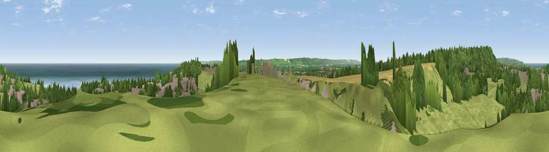

Viewpoint near Osgodby
#2378 in England · top 6% of its area beats it · near OsgodbyThe view, rendered

A 360° render of this exact spot computed from the terrain model, tree cover and land cover — summer colours, afternoon light, calibrated against photographs of famous viewpoints. Real trees, hedges and buildings will differ in detail.
The panorama
Grey silhouette: terrain skyline in each direction (720 bearings, Earth curvature and refraction included). Dashed green: skyline with trees (+15 m) and buildings (+8 m) as obstacles. Blue strip: how far the ground is visible on each bearing.
Where the view opens
Wedge length = distance to the farthest visible ground on that bearing (vegetation-aware). Rings at 10, 25 and 50 km.
What fills the view
41% grassland · 23% woodland · 14% built-up · 12% cropland · 10% water
Angular shares of the visible panorama (visual magnitude), not map area. Landscape diversity 0.64 (0–1 Shannon).
Key numbers
More beautiful places nearby
The staircase of upgrades: each row has a higher view potential than everything closer. Driving times are estimates from straight-line distance, calibrated against real road routing — check an actual route before setting out.
| Place | Direction | Drive | Score |
|---|---|---|---|
| Olivers Mount | NW · 2 km | ~4 min | 80.3 |
| Viewpoint near Ravenscar | NNW · 16 km | ~29 min | 82.7 |
| Viewpoint near Ravenscar | NNW · 17 km | ~30 min | 87.3 |
| Viewpoint near Ravenscar | NNW · 19 km | ~32 min | 90.0 |
| Viewpoint near Easington | NW · 46 km | ~66 min | 90.2 |
| The Knoll | SSW · 426 km | ~402 min | 91.0 |
54.25677, -0.39009 · source: screening · position refined by local search. Computed location — check access rights before visiting.